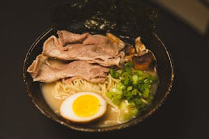
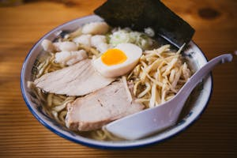
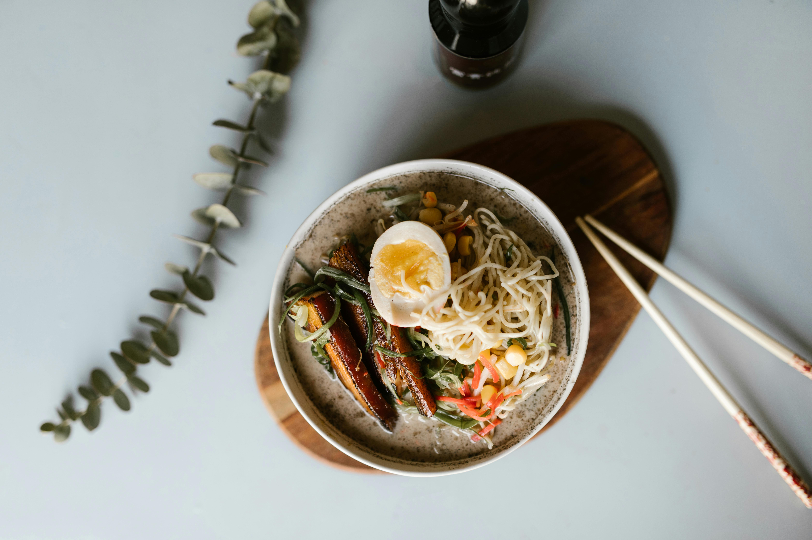

Comida Oriental
A culinária Japonesa é bastante equilibrada, sendo muito rica em peixes (ômega 3), vegetais, massas e ingredientes frescos.
Ver Cardápio

Feita de forma tradicional
Cada prato "feita de forma tradicional" é uma ode à excelência. Desde o meticuloso corte do sashimi até a preparação delicada do sushi, cada etapa é uma reverência à herança culinária do Japão.
Populares

Ramen de Frango
Macarrão chinês, uma sopa com caldo à base de frango, temperados com uma base tarê (molho) que dá sabor ao caldo
R$ 30,00

Ramen Apimentado
Macarrão chinês, uma sopa com caldo apimentado e ovos cozidos ou carne de sua preferência
R$ 24,00

Ramen Vegetariano
Macarrão chinês, uma sopa com caldo à base de milho e carne vegetal, acompanhado com legumes e ovos cozidos
R$ 28,70
Comentários
Maria Eduarda Zerbone
Ótimo serviço! Encantada com a qualidade dos pratos.
Ruan Pinheiro Lima
Não é apenas a comida excelente, o serviço torna a experiência especial.